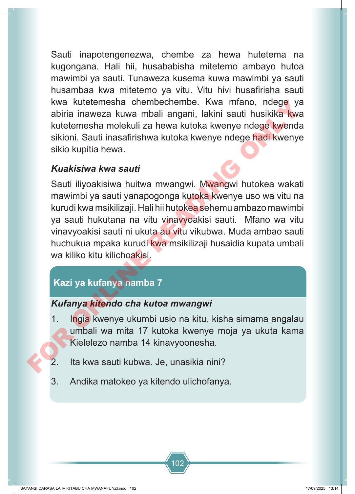

102 Sauti inapotengenezwa, chembe za hewa hutetema na kugongana. Hali hii, husababisha mitetemo ambayo hutoa mawimbi ya sauti. Tunaweza kusema kuwa mawimbi ya sauti husambaa kwa mitetemo ya vitu. Vitu hivi husafirisha sauti kwa kutetemesha chembechembe. Kwa mfano, ndege ya abiria inaweza kuwa mbali angani, lakini sauti husikika kwa kutetemesha molekuli za hewa kutoka kwenye ndege kwenda sikioni. Sauti inasafirishwa kutoka kwenye ndege hadi kwenye sikio kupitia hewa. Kuakisiwa kwa sauti Sauti iliyoakisiwa huitwa mwangwi. Mwangwi hutokea wakati mawimbi ya sauti yanapogonga kutoka kwenye uso wa vitu na kurudi kwa msikilizaji. Hali hii hutokea sehemu ambazo mawimbi ya sauti hukutana na vitu vinavyoakisi sauti. Mfano wa vitu vinavyoakisi sauti ni ukuta au vitu vikubwa. Muda ambao sauti huchukua mpaka kurudi kwa msikilizaji husaidia kupata umbali wa kiliko kitu kilichoakisi. Kazi ya kufanya namba 7 Kufanya kitendo cha kutoa mwangwi 1. Ingia kwenye ukumbi usio na kitu, kisha simama angalau umbali wa mita 17 kutoka kwenye moja ya ukuta kama Kielelezo namba 14 kinavyoonesha. 2. Ita kwa sauti kubwa. Je, unasikia nini? 3. Andika matokeo ya kitendo ulichofanya. SAYANSI DARASA LA IV KITABU CHA MWANAFUNZI.indd 102 SAYANSI DARASA LA IV KITABU CHA MWANAFUNZI.indd 102 17/09/2025 13:14 17/09/2025 13:14 F O R O N L I N E R E A D I N G O N L Y